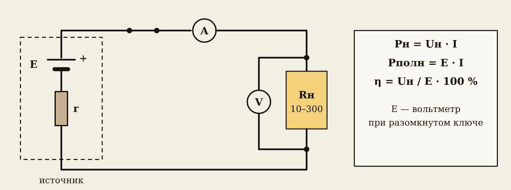
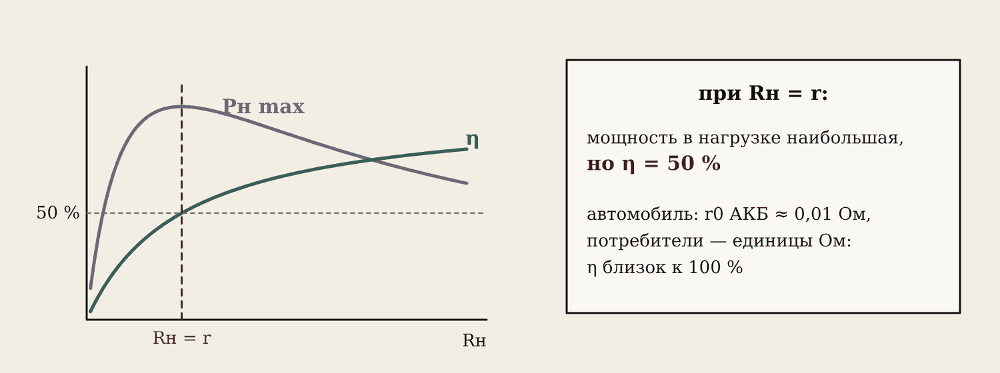

1. Цель и вариант
Цель: исследовать, как мощность нагрузки и КПД зависят от сопротивления нагрузки Rн, и найти условие наибольшей мощности.
Вариант — номер в журнале: ЭДС E и сопротивление r, которое изображает внутреннее сопротивление источника. Нагрузка Rн = 10, 20, 50, 100, 150, 200, 300 Ом. Маршруты: А — Proteus, Б — вживую (блок питания, резистор r 2 Вт, магазин сопротивлений), В — браузер, вкладка «КПД».
Осторожно
Нагрузку 0 Ом не ставить: это короткое замыкание, весь ток — через r. При малых Rн резистор r греется сильнее всего. Магазин и резисторы переключать при разомкнутом ключе.
2. Ход работы

- Холостой ход: ключ разомкнут, тока нет — вольтметр показывает ЭДС E. Запишите.
- Замкните ключ и по очереди ставьте Rн = 10 … 300 Ом. Для каждого записывайте Uн и I.
- Посчитайте: Pнагр = Uн · I, Pполн = E · I, η = Pнагр / Pполн · 100 % = Uн / E · 100 %.
Образец, вариант 4: E = 9 В, r = 150 Ом.
| Rн, Ом | Uн, В | I, мА | Pнагр, Вт | η, % |
|---|---|---|---|---|
| 10 | 0,56 | 56,2 | 0,032 | 6,2 |
| 50 | 2,25 | 45,0 | 0,101 | 25,0 |
| 150 | 4,50 | 30,0 | 0,135 | 50,0 |
| 300 | 6,00 | 20,0 | 0,120 | 66,7 |
Наибольшая Pнагр = 0,135 Вт при Rн = r = 150 Ом, и там η = 50 %.
3. Графики

- Pнагр(Rн) — «горб» с вершиной при Rн = r. Наибольшая мощность Pmax = E² / (4r).
- η(Rн) — растёт и стремится к 100 %. При Rн = r КПД ровно 50 %: половина энергии греет сам источник.
Постройте оба графика на одной оси Rн и отметьте Rн, при котором η = 50 %.
4. В машине
Автомобилю не нужна «наибольшая мощность любой ценой» — ему нужен высокий КПД, чтобы энергия не грела аккумулятор и провода.
Лампа фары 2,6 Ом, r0 аккумулятора 0,01 Ом: η = 2,6 / 2,61 ≈ 99,6 %.
Стартер 0,05 Ом против 0,01 Ом: η = 0,05 / 0,06 ≈ 83 % — заметная часть энергии теряется внутри батареи. У старой АКБ r0 больше — потери ещё больше, напряжение при пуске проваливается.
Три режима цепи
| Режим | Что происходит |
|---|---|
| Холостой ход | Цепь разомкнута: I = 0, U = E |
| Номинальный | Ток и напряжение равны паспортным (лампа 12 В, 55 Вт) |
| Короткое замыкание | Rн ≈ 0: I = E / r — у АКБ тысячи ампер, КПД ноль |
Потери в проводе: ΔU = I · Rпр, ΔP = I² · Rпр. Поэтому провода стартера и АКБ толстые — 16–35 мм².
5. Маршруты А и В
Proteus: BATTERY (Voltage = E), рядом RES r последовательно — это внутреннее сопротивление; RES Rн — меняем 10 … 300. DC AMMETER (Milliamps) последовательно, DC VOLTMETER на Rн. Холостой ход: удалить провод к Rн.
Браузер: номер варианта, «Разомкнуто» — запишите E. Кнопки 10 … 300: Uн и I в таблицу, точки на графиках. Внизу проверьте Pнагр, η и Rн при η = 50 %.
6. Выводы и защита
Шаблон выводов:
- ЭДС источника E = … В (холостой ход). С ростом Rн ток уменьшается, Uн растёт.
- Наибольшая Pнагр = … Вт при Rн = … Ом ≈ r; КПД при этом … % ≈ 50 %.
- С ростом Rн КПД растёт: при 300 Ом — … %.
- В автомобиле Rн ≫ r0 — КПД близок к 100 %; большое r0 старого АКБ — потери и провал напряжения при пуске.
В отчёт: таблица, два графика, Rн при η = 50 %, выводы, ответы на вопросы. К ПЗ № 1 повторите законы Кирхгофа и порядок расчёта смешанной цепи (Т6).
Словарик
- КПД (η) — доля полезной мощности, %.
- Согласование — Rн = r: наибольшая мощность в нагрузке, КПД 50 %.
- Холостой ход — цепь разомкнута, I = 0, U = E.
- Номинальный режим — работа при паспортных токе и напряжении.
Эталоны в тетрадь
Перепишите в тетрадь по билетам — каждый эталон на отдельную страницу, с рисунком и строкой «Мой пример».
КПД и режимы цепи
КПД цепи постоянного тока, потери в проводах. Режимы работы цепи: холостой ход, номинальный режим, короткое замыкание.
- КПД η = Pполезн / Pполн · 100 %; для источника η = U / E. Потери — нагрев внутреннего сопротивления и проводов.
- Потери в проводе: ΔU = I·Rпр, ΔP = I²·Rпр. Поэтому провода стартера и АКБ толстые — 16–35 мм².
- Холостой ход: цепь разомкнута, I = 0, U = E. Номинальный режим: ток и напряжение равны паспортным (лампа 12 В, 55 Вт).
- Короткое замыкание: R ≈ 0, I = E / r0 — у АКБ тысячи ампер; плавит ключ, сжигает проводку.
- Наибольшая мощность в нагрузке при Rн = r0, но КПД тогда 50 %. В автомобиле нужен высокий КПД: Rн намного больше r0.
Проверь себя
Сначала ответьте сами — в тетради или вслух. Потом нажмите на вопрос, чтобы увидеть ответ.
1Что такое КПД источника и как его рассчитать?
Доля полезной мощности: η = Pнагр / Pполн = Uн / E.
2Когда в нагрузке наибольшая мощность и какой при этом КПД?
При Rн = r, КПД 50 %.
3Почему в машине нужен высокий КПД, а не максимум мощности?
Меньше потерь и нагрева аккумулятора и проводов.
4Как внутреннее сопротивление АКБ влияет на пуск?
Большое r0 — больше потери внутри батареи, напряжение при пуске проседает, стартер крутит вяло.
5E = 12 В, r = 100 Ом. Какова наибольшая мощность в нагрузке?
Pmax = E² / (4r) = 144 / 400 = 0,36 Вт при Rн = 100 Ом.
Попробуйте в лаборатории
Откройте на телефоне или компьютере — ничего устанавливать не нужно.
Ответы к «Проверь себя»
- Доля полезной мощности: η = Pнагр / Pполн = Uн / E.
- При Rн = r, КПД 50 %.
- Меньше потерь и нагрева аккумулятора и проводов.
- Большое r0 — больше потери внутри батареи, напряжение при пуске проседает, стартер крутит вяло.
- Pmax = E² / (4r) = 144 / 400 = 0,36 Вт при Rн = 100 Ом.